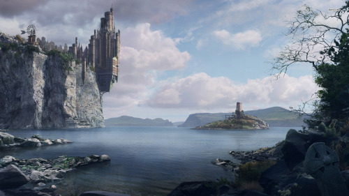

back
Capital City: Rayoban

The Capital of the Kingdom of Marns, Rayoban is located at the top of a large Hill overlooking the southern Ocean. The city is the largest of the kingdom and it is where the King resides.
The city has a large number of military and governmental building. It has commerces and many residences too, but its most notable landmarks are the naval yard, the baracks and the castle.